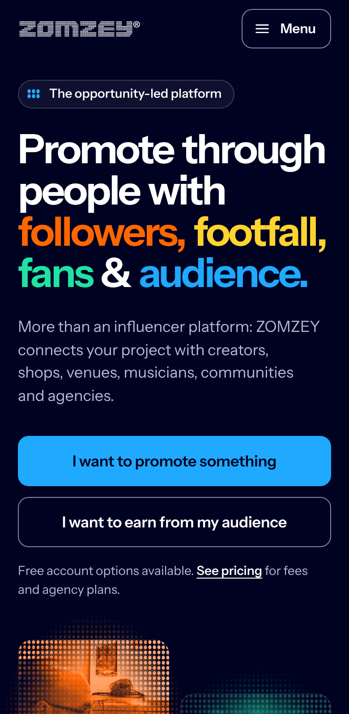
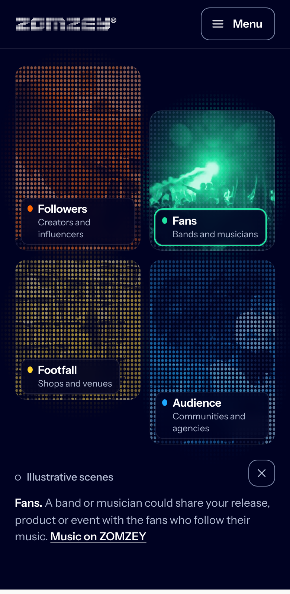
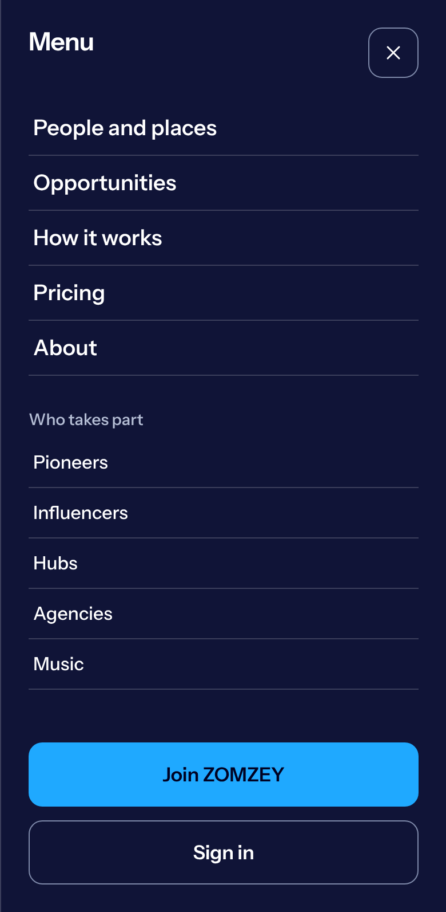
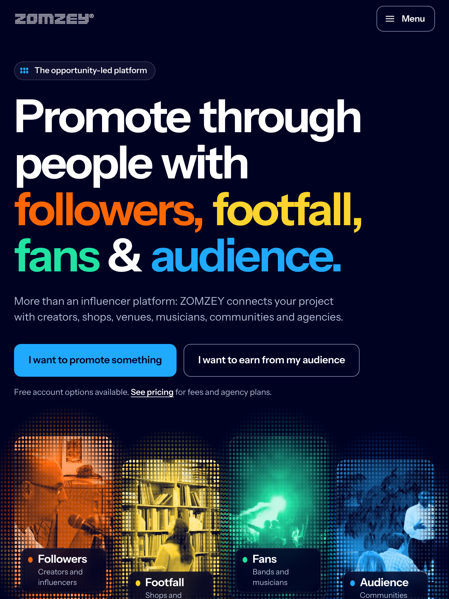

02 · Mobile and responsive
One idea, every screen.
On a phone the four-line promise and both actions fit the first screen. The wall follows as two staggered columns, tablets show one row of four, and every scene works by tap.

Opening, 390 × 844
Headline at 45px, four lines that never re-wrap. Description and both intent actions before any scrolling.

The wall, by tap
Two staggered columns. Tapping Fans resolves its scene, dims the others and explains an example.

Menu
A labelled Menu button opens every link, all five groups, sign in and join. Escape returns focus.

Tablet, 768 × 1024
The message keeps its four lines; the wall becomes one row of four, gently offset.
Up to 759px
Message first, then two staggered columns: followers and footfall, fans and audience.
760 to 1199px
Message across the top, the wall as one row of four with alternate offsets.
1200px and wider
Message beside a two-by-two pinwheel; everything fits a 1440 × 900 screen.